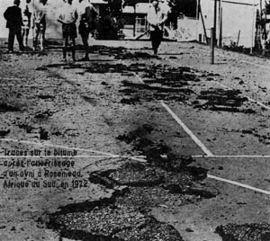

Nixon choisit la
navette pour remplacer les lanceurs civils américains.
A Rosemead (Afrique du Sud) un ovni est décrit atterrissant et laissant des traces sur le bitume (ci-contre).

Traces sur le bitume après l'atterrissage d'un ovni à Rosemead (Afrique du Sud)
Stuart Nixon et Richard J. Greenwell se
réunissent durant 3 jours pour discuter des moyens de chercher des relations coopératives entre le NICAP et l'APRO, et des manières dont
les organisations pourraient diriger leurs programmes de recherche afin d'éviter une redondance inutile
"NICAP
and APRO Take Major Step Toward Improved Relations", NICAP UFO Investigator, juin 1972.
A Imjarvi (Finlande), Aarno HeinonenAyant fait une observation en 1970 est chez lui lorsqu'il entend un bruit
étrange, puis une voix féminine qui lui dit de se rendre seul à un certain carrefour. Il le fait et
rencontre là une fille humanoïde 4 pieds 8 pouces de haut aux cheveux blonds, portant un pantalon
jaune qui semble luir, et des chaussures couleur argent. Elle porte par une poignée une boule argentée
sur laquelle se trouvent 3 antennes comme des projections. Elle lui dit que son peuple est venu de lq>e
côté de la Voie Lactée et q> types différents d'humanoïdes, allant de très petits à très grands, ont
visité Imjarvi. Elle lui dit aussi qu'elle a 180 ans, et lui demande de ne paler du contact avec personne d'autre Humcat 1972-11UFO Research Center of Finland & Joe Brill.
Eté
Au Maroc (désert du Sahara), récupération de
3 corps suite à un crash.
Début de la mission Skylab-3.
Lancement du 1er satellite Landsat destiné à l'observation
des ressources terrestres.
A Bagnacavallo (Italie), observation d'un
phénomène rectangulaire avec une partie supérieure bombée Notiziario Ufo (1972)Inforespace n°10 (1973).
A Vienne, le Congrès International d'Astronautique appuie l'idée de l'existence d'autres intelligences
dans l'univers.
Aux USA un couple de jeunes gens se trouvant à proximité d'un objet volant discoïde : ils entendirent ce qui
leur semble être la restitution de l'enregistrement de meuglements douloureux d'une vache, du cri d'un
oiseau qu'on tue et des hurlements d'un chien Lecomte, Michael.
Un commandant d'ovni rencontré dans le désert de Sonora avertit, Un soufq>ucléaire détruira une ville
américaine dans 6 ans.
Lancement du projet Snowbird, dont la mission serait
d'effectuer des vols expérimentaux sur des appareils extraterrestres récupérés.
Réélection de Richard Nixon à la présidence des États-Unis. Il nomme Henry Kissinger Conseiller à la Sécurité Nationale.
Au large des Açores, un navire expérimental de l'Institut du Pétrole permet de créer un polygone sous-marin de
l'OTAN, officiellement afin d'étudier les courants. Il s'agirait en fait d'un
laboratoire sous-marin de recherches acoustiques à usage exclusivement militaire (communication avec les
sous-marins nucléaires ?).
Dans une montagne de la Cordillère des Andes (Pérou), en Uruguay, en Patagonie, en Terre de Feu, des bandes de terrain plat ou à flanc de colline rougeoient, sinon possèdent
une pesanteur 3 fois plus importante que la normale et, en général, dans des régions où les populations
observent fréquemment des ovnis Gérard
Cambri.